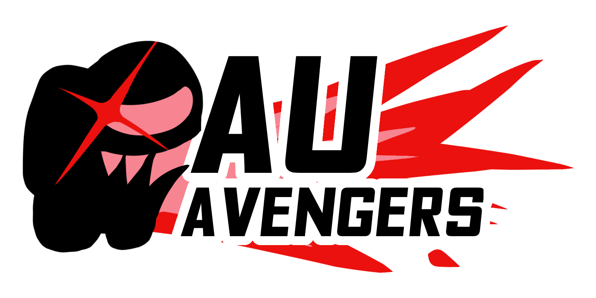
Welcome to the official AU Avengers website!
This website allows us to showcase what we do better, and also gives us a chance to introduce ourselves.

This website allows us to showcase what we do better, and also gives us a chance to introduce ourselves.
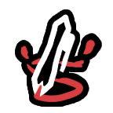
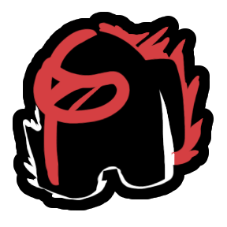
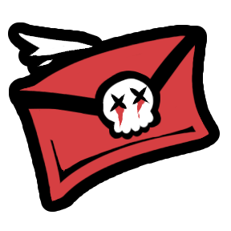
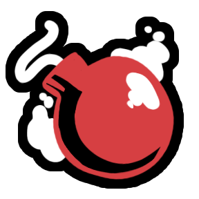
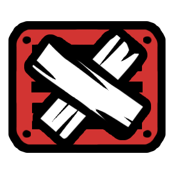
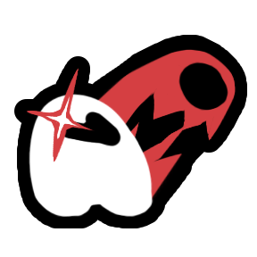
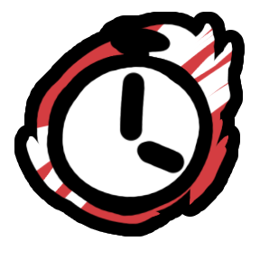
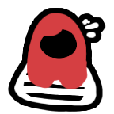
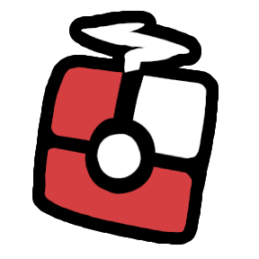
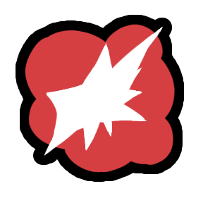
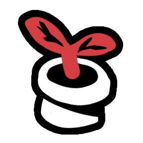
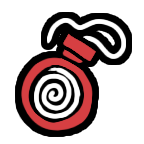
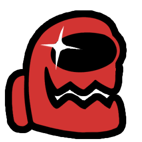
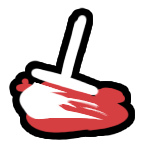
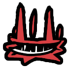
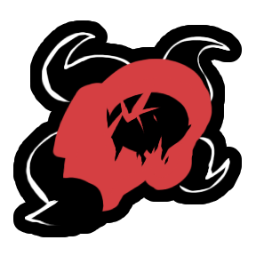
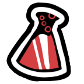
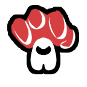
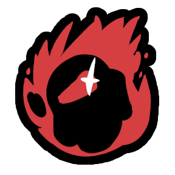
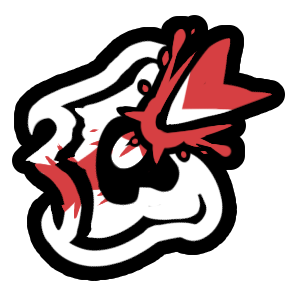
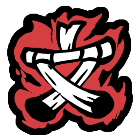
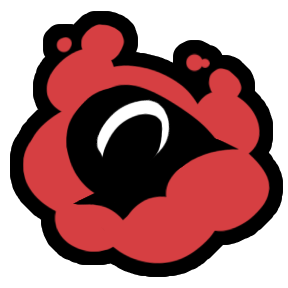
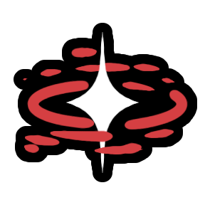
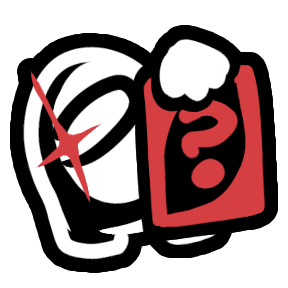
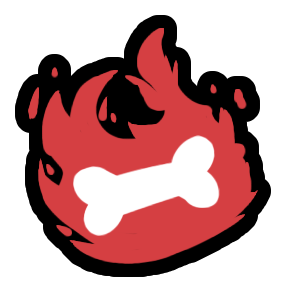
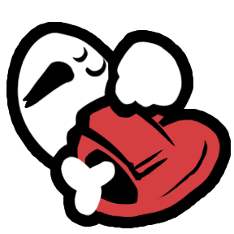
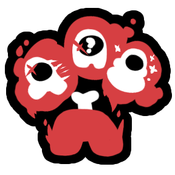
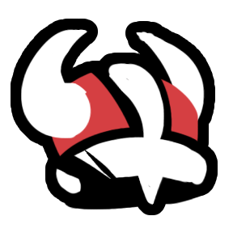
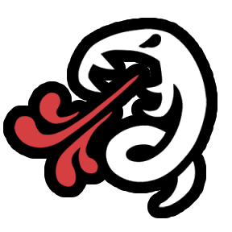
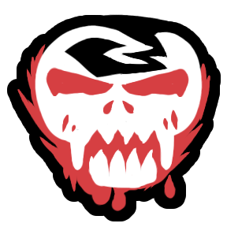
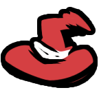
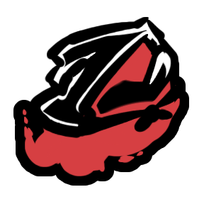
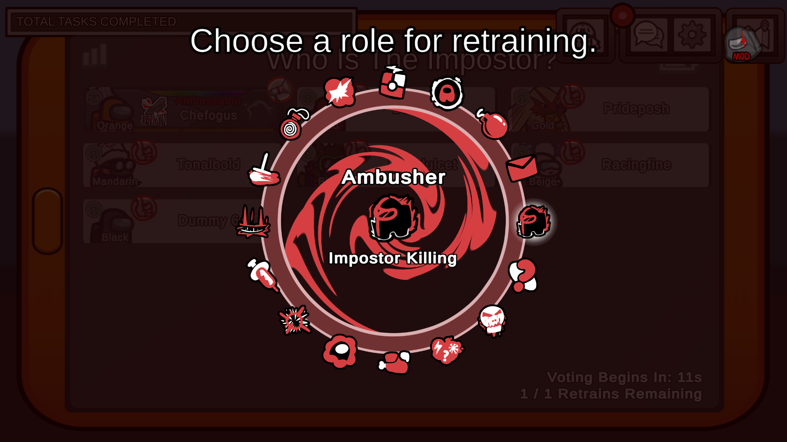
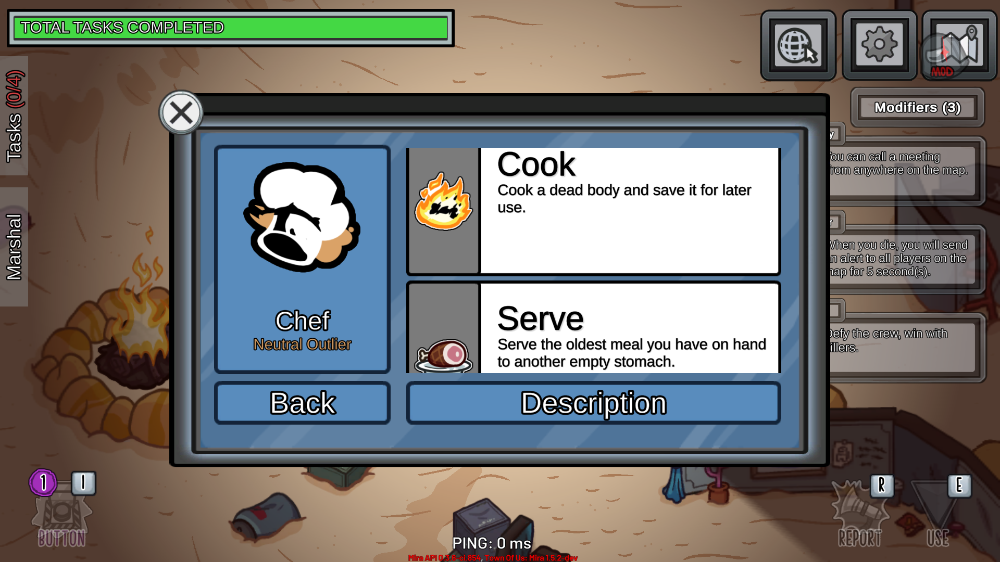
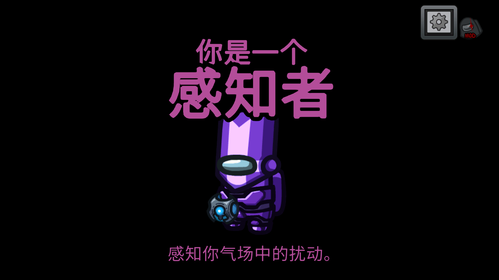